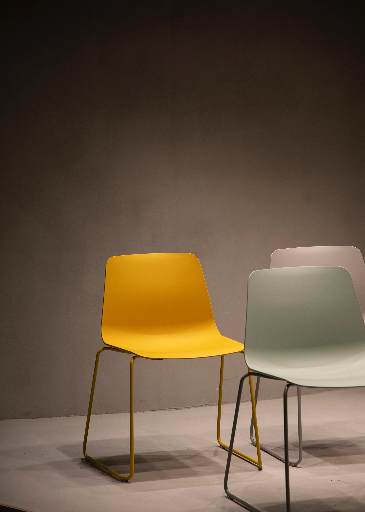
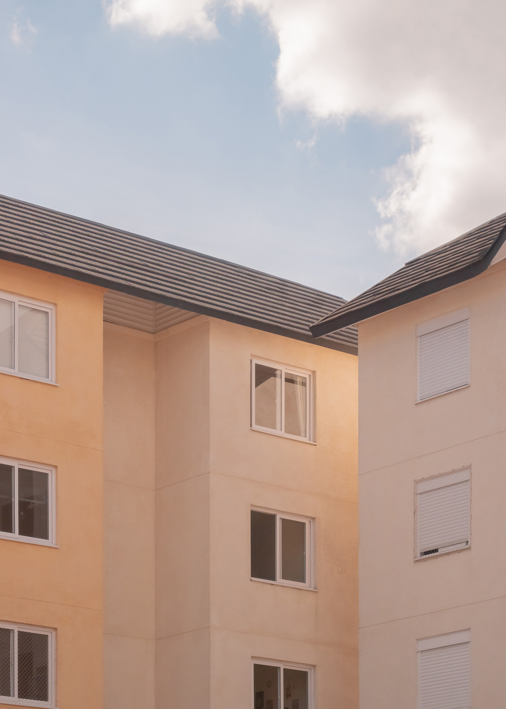
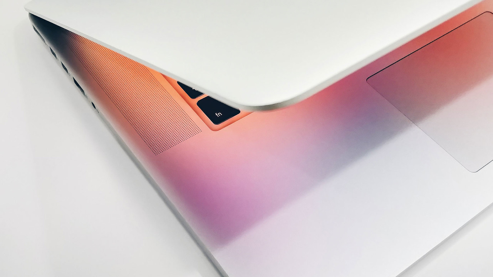

TPC(The Power Church) Pastor
생업에 종사하며 바울의 선교사역에 참여했던 여인 브리스가. 그녀의 이름을 딴 '브리스가 선교재단'건립을 준비중이다. 주님을 만나기까지 평범 이하의 삶을 살았었다고 고백하는 저자는 스무 살 무렵, 부모님의 권유로 성경을 읽기 시작하면서 '그 힘'을 통해 삶에 변화를 맞게 된다. 목회자의 길을 걷기 위해 성결대학교 신학과를 졸업했지만 개척교회에서 어려운 이웃을 섬기며 사례비 없는 목회를 하고 있는 부모님의 사역에 영향을 받아 '물질로 봉사하는 삶'을 선택했다. 저자는 현재 미얀마, 필리핀, 한국 개척교회의 선교사역에 동참하고 있다. 억대연봉자들의 모임으로 알려진 MDRT협회 회원으로 등재되어 있다.

주님께서는 다양한 통로로 자녀들을 부르십니다.
슬픈 자에게는 위로로..
아픈 자에게는 치유로..
무능한 자에게는 능력으로..
가난한 자에게는 그가 필요로 하는 것으로...
축복으로 부르심을 받은 지체를 위해 이 글을 남깁니다.
➜ Blessing Letter



상호명: THE POWER CHURCH